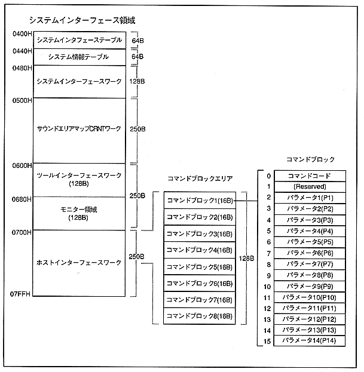

Return to previous page ｜ Return to menu ｜ Go to next page
Chapter 4 Commands and Status
4.1 Command area
control command is issued to the following command block area. Write the command code and necessary parameters (P1--P14) in the 16-byte command block. Since there are 8 command blocks, up to 8 commands can be issued simultaneously.
Refer to “Chapter 6 Supplementary explanation 6.1 How to issue commands” for the writing procedure.

Return to previous page ｜ Return to menu ｜ Go to next page